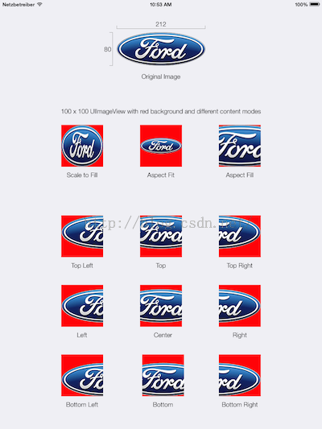

iOS Learning
Syntax Sugar
- image name directly is equal to
UIImage(named: "\(imageName)") - configure a slider image example
1
2
3
4
5
6
7slider.setThumbImage(#imageLiteral(resourceName: "SliderThumb-Normal"), for: .normal)
slider.setThumbImage(#imageLiteral(resourceName: "SliderThumb-Highlighted"), for: .highlighted)
let insets = UIEdgeInsets(top: 0, left: 14, bottom: 0, right: 14)
slider.setMinimumTrackImage(#imageLiteral(resourceName: "SliderTrackLeft").resizableImage(withCapInsets: insets), for: .normal)
slider.setMaximumTrackImage(#imageLiteral(resourceName: "SliderTrackRight").resizableImage(withCapInsets: insets), for: .normal)
Delegates and Data Source
- The delegating object is often a responder object, responding to a user event.
- The delegate is an object that is delegated control of the user interface for that event
- The delegating class has an outlet or property, usually one that is named
delegate A data source is like a delegate except that, instead of being delegated control of the user interface, it is delegated control of data.
Sharing data from different view controller
- delegates (using protocol)
segues (assign property to destination)
let controller = segue.destination as! viewController
controller.property = xxxTag
An integer that you can use to identify view objects in your application. The default value is 0
AutoSize
- relation between the view and its supview, not define subviews relationship
- For width/height, set means flexible, unset means fixed.
- For margin, set means fixed, unset means flexible
Intrinsic content size
the size that will exactly fit a view’s content
- content hugging: higher priority, don’t grow
compress resistance: higher priority, don’t shrink
Stack view
- non-render view, means size, constrain defined by subviews.
- shift+right click to select the view hierarchy in storyboard.
- Type: horizontal/vertical
- Spacing: minimum space between subviews.
- alignment: perpendicular relation to its axis
- fill
- max intrinsic content size define the stack size, another will fill full entire stack view
- horizontal: leading, center, tailing / vertical: top, center, bottom
- using intrinsic content width/height to determine the size
- First/Last baseline
- Distribution: position along the axis
- fill
- using intrinsic content size, grow or shrink one view (depend on hugging or resistance, if tie, resize the first one)
- fill equally
- using only one intrinsic content size, all the same size of other subviews
- fill proportionally
- starting intrinsic content size, grow or shrink views in proportion to their intrinsic content size
- equal spacing
- starting intrinsic content size
- if there are extra space, split equally between views
- if smaller than needed, using
spaceproperty to keep minimum space, shrink one views based on resistance priority
- equal centering
- similar to last one, space is based on subviews center.
Image Fill Mode

Storage